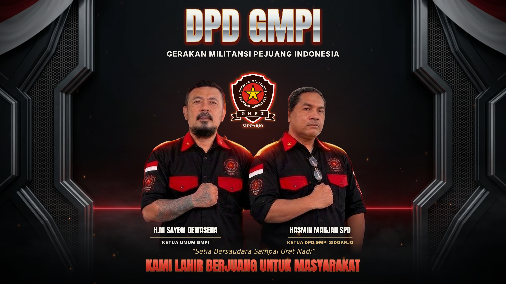

FILM IDENTITAS · EDISI SINEMATIK
Cahaya perjuangan.
Satu tekad. Satu pengabdian.
Dari Sidoarjo, untuk masyarakat.

Film interaktif belum dapat dimuat. Anda tetap dapat melihat poster atau mengunduh videonya di bawah.
Mengandung kilatan cahaya. Pilih mode lembut untuk kilat yang lebih redup.
DI BALIK VISUAL
Wajah asli. Semangat yang hidup.
Dua pimpinan, satu pengabdian. Sosok H.M Sayegi Dewasena dan Hasmin Marjan SPD dari poster asli dihidupkan melalui animasi parallax 2.5D: kedalaman berlapis, gerak kamera perlahan, kilat, asap, dan bara api. Bukan rekonstruksi wajah atau gerakan tubuh baru.
2.5D PARALLAX24 FPS16:924 DETIK
ARSIP VISUAL
Bawa pulang cahayanya.
MP4 · 3840 × 2160 · H.264 + AAC